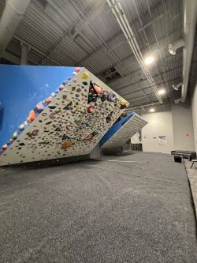
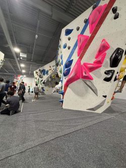
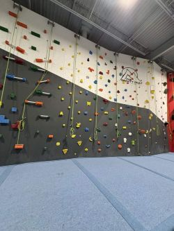
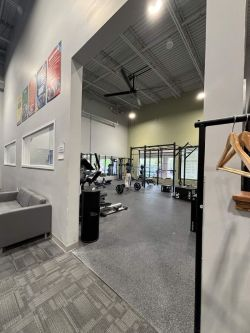

Here's a quick look into one of the climbing gyms we spend the most time in, Gravity Vault Princeton. Located in Plainsboro, just outside of Princeton, it's become our go-to gym during the school year because of its student discount Wednesdays, where the passes drop to only $15.
I first visited the gym in September 2025, and I've been coming back ever since. At first, I was sticking to beginner bouldering routes, but over time I've started to branch out and challenge myself a bit more, even hopping on some top-ropes! That's what I like most about the gym: the variety of climbing available. There's a good mix of beginner-friendly routes, overhangs, slabs, caves, and top-ropes. The gym also has training areas, hangboards, pull-up bars, and even a small lounge area with a ping pong table! (Click here if you want to watch me and Annie rally!)
More than anything, I like the atmosphere. It's fun and welcoming, even when the gym gets crowded. People are usually willing to give advice, talk about climbs we're stuck on, and celebrate each others sends. At this point, its more so like our second home!

The overhang wall leans over 90 degrees for all parts of the climb, making them reliant on strong footing and a solid core.

The clift wall is a freestyle climbing area, where the holds light up!

The cave is a climbing area that requires a shift from overhang to vertical climbing.

The kids' climbing section is the perfect place to get your child acclimated to the world of climbing!

Top-rope climbing requires a harness and belay, since you climb over 30 feet into the air!

The slab wall is positioned less than 90 degrees on the wall, focusing on good footing, balance, and proper technique.

The gym is a great place to warm-up or cool-down after a long climbing session. Some even show up just to use the gym!
| ICON | Key |
|---|---|
| Route-Set Walls | |
| Free Climb Walls | |
| Gym |
The cave is my favorite area of the gym because it's a good mix of everything! Depending on the week, the routes change, but there are usually some really fun overhang climbs that force you to be a bit creative. You'll start out climbing underneath the wall, and then at some point you'll have to commit and transition back to vertical.
That shift is what makes the cave so interesting! You not only need strength, but the mental fortitude to read the route and top the wall, especially with gravity working against you. This is the spot that pushes you to build both good technique and strong endurance over time!
The clift wall is a free climbing area where you have no destination, just hang onto the wall and move around! This is a great spot for beginners to start off on since the hold don't go too high and they can get a good feel of the wall before attacking a real climb!
There is also a tablet that you can use to climb routes set by other climbers in the gym. I usually use this to warm down after a long day of climbing.
Most climbing gyms typically have a gym area, and Gravity Vault Princeton is no expection. They have everything a climber may need, including pull-up bars, dumbells, bench presses, and cable machines! There is also a treadmill, elliptical, and rowing machine for those who want to improve on their cardio.
This is the perfect place to stretch and warm up before a long, hard climbing session. (Here's a look into some stretches we like to hit before climbs: 10 Stretches For Climbers)
You can never start them too young, especially since there is a whole section dedicated for kids to begin learning how to climb. This section is a bit more fun, especially since the holds resemble dinosaurs, legos, and some of their favorite characters!
I honestly wish that I started rock climbing WAY earlier than I did. This article talks about some of the benefits of enrolling your child in rock climbing early. I would definitely recommend it!
Overhang is the spot if you really want to feel it in the morning. The incline makes it extremely difficult to keep your feet on the wall, and gravity is working against you at every part of the climb.
Since this is also a free climb area, it's a lot of fun to just jump onto the wall and see where it takes you. There is also a kilter board for more advanced climbers to use!
Here's some tips if you're want to start learning how to climb overhang!
The slab wall is either your favorite or least favorite wall. The wall is positioned less than 90 degrees, meaning it leans away from the climber. Thus, it is less strength-based compared to the other walls since slab emphasizes on balance, precise footing, and good friction.
Most of the climbs that I prefer are on the slab wall, but I will say they are scary sometimes! But good technique, like smearing, palming, straight arms, and trusting your feet, will always lead to a good day on slab!
This section is dedicated exclusively to the top ropes. They have traditional belays, auto belays, and the option to lead climb if you know how!
Years ago, when my cousin first introduced me to rock climbing, I went top-rope climbing. It was defintiely a bit nerve-wracking to be that high in the sky, but there's a sort of rush that you get at the top of these climbs that you just don't have when bouldering! Sometimes, I'll rent a harness and do some top ropes mid session if I don't feel like the bolders are hitting.